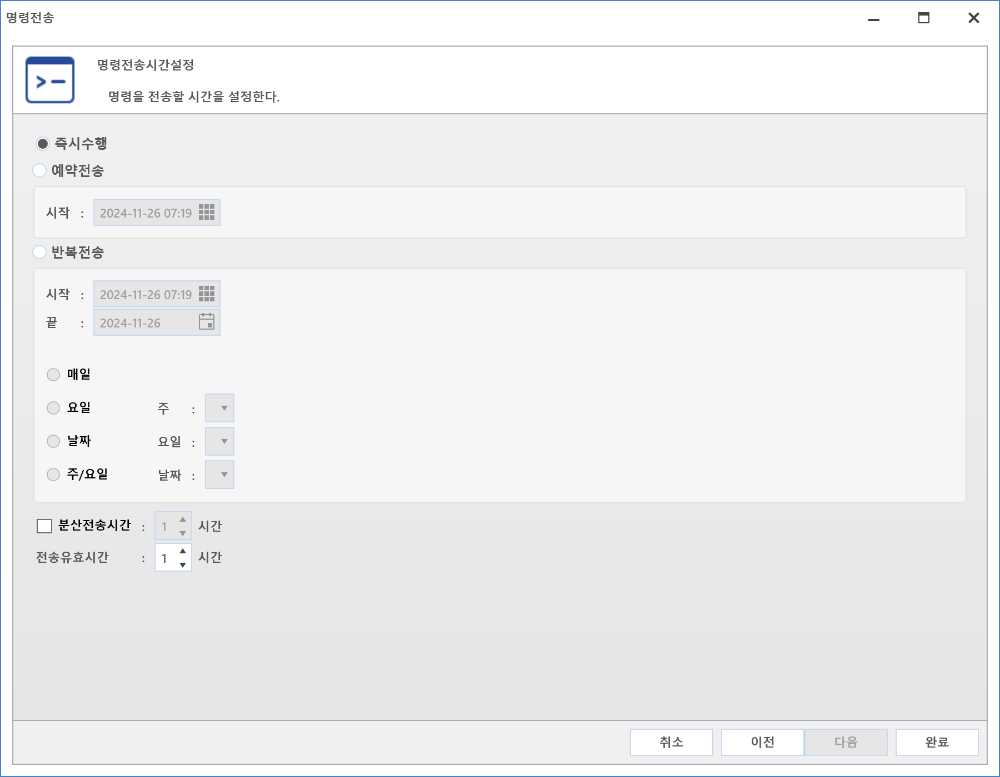

10-4. 명령전송
10-4. 명령전송
Source: https://www.sweeper.or.kr/etc/manual/10-4.html
10-4. 명령전송
10. 기타 ››


에이전트의 장비 컨트롤을 위한 명령을 만들수 있으며, 다양한 기능을 설정하여 전송할 수 있습니다.
전달된 명령처리결과는 [명령센터]에서 확인 가능합니다.
설정방법
- 명령전송 대상장비를 선택한 뒤 마우스 우클릭 합니다.
-
메뉴가 나타나면 명령전송을 클릭합니다.

-
명령전송이 팝업되면 선택된 대상을 확인할수 있습니다.

-
대상을 추가하려면 추가버튼을 클릭합니다.
-
그룹으로도 명령을 보낼 수 있습니다.
-
대상 장비 확인이 완료되면 다음 버튼을 클릭합니다.
-
좌측메뉴에서 보내고자 하는 명령을 선택합니다.

-
명령상세설정 모두 완료한 뒤 다음 버튼을 클릭합니다.
- 명령전송시간 설정화면이 나타납니다. 명령전송시간이 마지막으로 설정이 끝나면 완료버튼을 클릭하면 명령이 전송됩니다.

- 즉시수행 : 명령완료 후 즉시 전송됩니다.
- 예약전송 : 설정된 시간부터 명령 전송이 진행됩니다.
- 반복전송 : 명령센터에서 설정가능하며 [반복명령]을 확인하여 주시기 바랍니다.
-
분산전송시간 : 대량 명령 전송 시 부하분산을 하기 위한 설정입니다.
-
설정된 시간을 10분 단위로하여 장비로 나누어 전송합니다.
- 전송분산식 : 100대를 1시간 설정으로 전송할 경우 100/6 = 16.66...약 17대를 10분 단위로 6회 전송합니다.
-
주의사항 : 수량이 적은 경우 오히려 전송처리가 늦을 수 있으며, Network 효율이 낮은 경우 사용하도록 합니다.
-
분산유효시간 : 오프라인 등 명령을 받지 못한 장비들을 위한 명령유지 시간 설정입니다.
-
명령 전송 후 설정된 시간만큼 유지하며 시간내 오프라인 장비가 온라인으로 되지 않은 경우 명령을 전송받을 수 없습니다.
-
반드시 전송해야 하는 중요한 명령의 경우 유효시간을 길게 설정하는 것이 좋습니다.
-
명령처리에 대한 결과는 [명령센터]에서 확인합니다.
© Copyright SWeeper Inc.. All Rights Reserved